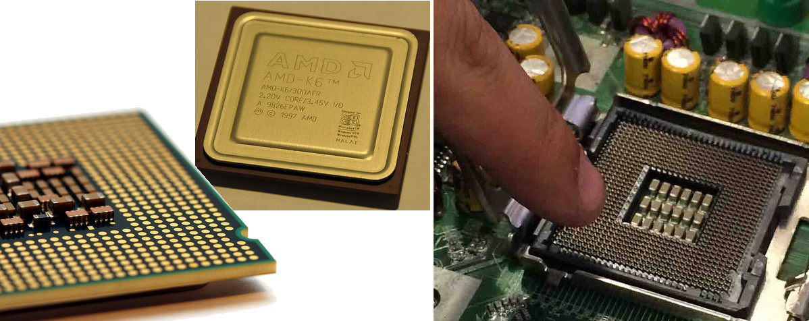
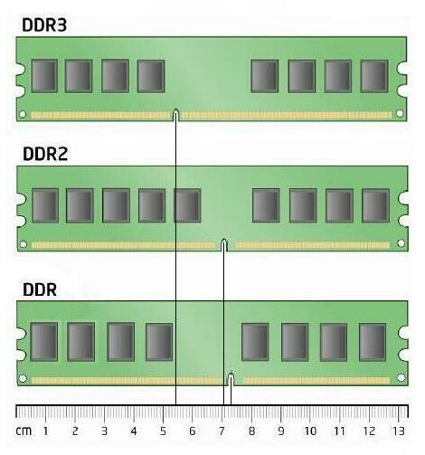
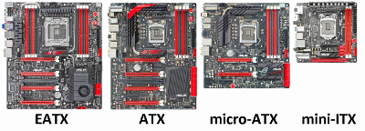
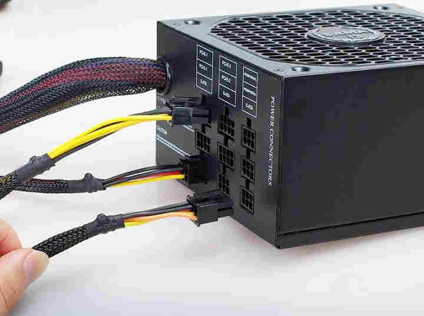
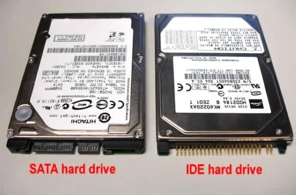

Embora o linux seja meramente software, ele depende do hardware para operar. As capacidades e limitacoes do hardware vao concerteza influenciar as capacidades e limitacoes do linux em execucao nesse hardware. Portanto, deve conhecer os variados componentes disponiveis no computador.
CPU

O processador é um dos componentes mais caros, mas ao mesmo tempo mais importante. Unidade central de processamento em portugues. corresponde ao cérebro do computador, onde é feita a maior parte dos cálculos. É responsável pelo processamento de todos os tipos de dados e pela apresentação de resultados do processamento.
componentes do cpu
- Unidade lógica e aritmética (ULA): executa as operações aritméticas e lógicas
- Unidade de controle (UC): extrai instruções da memória e as decodifica
- Registradores e Memória cache: guarda as instruções, ou valores em registros, que serão usadas no processamento de cada comando.
À velocidade com que as informações são transmitidas é dado o nome de “clock”. Essa taxa é medida em Hertz (Hz) e vem expressa no modelo do processador.
32bits vs 64bits
32 bits Vantagens
- Facilidade em encontrar softwares para esta plataforma.
- É o mais indicado para maquinas com baixo desempenho.
- A versão 32bits em geral é mais barata.
32 bits Desvantagens
- Só trabalha com no máximo 4gb de memoria RAM.
- É mais lento
64 bits Vantagens
- Lida melhor com altas quantidades de memória RAM.
- Suporta até 128gb de memoria RAM.
- Pode processar o dobro de informações que um computador de 32 bits.
- o tamanho dos ficheiros é menor
64 bits Desvantagens
- Necessita de uma maquina mais cara
- Software com versões 64 bits não funcionam em processadores com capacidade inferior.
Intel e AMD são as principais empresas fabricantes mundiais de processadores. Os processadores AMD trazem geralmente um clock superior, para o alcançarem consomem mais energia e como tal geram mais calor.
RAM a memoria principal

É o sistema de memoria de acesso aleatório que vai fornecer ao processador toda a informacao necessaria para este executar os programas e guardar os dados relativos a esse processamento.
quanto maior for a memoria presente no sistema, mais determinante vai ser o desempenho do processador. É essencial principalmente para os editores de video, e para aplicações 3D, tarefas que ocupam muita memória. Quando o computador é reiniciado, os dados da memória RAM são apagados.
Alguns tipos de memorias mais usadas:
-
dimm (dual in-line module memory) com 168 contactos, pent2 ao 4
-
ddr (double data rate) envia o dobro de informacoes para o processador tem 186 contactos
-
ddr2 a velocidade e o dobro das ddr
Quanto menor for o CL ou CAS (indicador de latência), o tempo de resposta do tráfego de informação será menor, ou seja, melhor. Devemos procurar por memorias com caracteristicas de alta frequência e baixa latência.
Placa mãe

A placa mãe é o suporte para as peças, é onde tudo fica conectado e interligado. Nada mais que uma Print Circuit Board(PCB), uma tabua com circuitos impressos.
- socket para processador
- slot memoria ram
- slot pci express
| caracteristicas ATX | Descricao |
|---|---|
| extended atx | tamanho grande |
| atx | tamanho médio |
| micro atx | |
| resulta na perda de alguns dos slots PCI. | |
| ATX de tamanho normal em um formato menor . |
- mini itx (utiliza pouca energia, e, portanto, gera menos calor, placa quadrada, 1 slot de ram)
ROM-BIOS
primeira camada de software do sistema responsavel pelo arranque do PC BIOS(basic input/output system) e um conjunto de instrucoes que constituem um programa armazenado em memoria do tipo ROM(read only memory). determina a compactibilidade ao software por parte do hardware da placa de sistema. Ao iniciar o PC a BIOS detecta os compomentes de hardware ligados, depois desse processo de identificacao a BIOS passa o controlo para o sistema operativo. Então o arranque do sistema acontece.
O famoso overclock, que é alterar a velocidade do clock do processador ou defenir a data e hora são valores configurados na BIOS. A técnica de "flash rom" permite alterar/actualizar a BIOS existente do sistema a partir de ficheiros.
FIRMWARE
Conjunto de instrucoes essenciais para o funcionamento do dispositivo. É armazenado em um chip de memoria ROM ou memoria flash no proprio dispositivo.
ARQUITECTURA DE BUS/Barramento
a comunicacao de dados, instrucoes e sinais de controlo sao realizadas atraves de linhas de comunicaçao que se designam por bus. O PC recebe e envia sinais pelo BUS do seguinte modo:
- BUS de sistema, liga o CPU com a memoria RAM
- BUS de Entrada e Saida, liga o CPU a outros componentes
SLOTS DE EXPANSAO
Existem diversas arquitecturas de BUS/barramento. Podem ligar a portas internas(SLOTS) e externas(USB), até mesmo ligar a outros tipos diferentes de BUS. Permitem a interligação entre os vários dispositivos para existir comunicação entre eles.
PCI
A Intel surgiu em 1990 com a necessidade de projectar um bus que fizesse a ligacao directa entre o processador, a memoria e os perifericos. Para isso era necessario um bus de alta velocidade. Surge o PCI( Peripheral Component Interconnect).
AGP
Tambem desenvolvido pela Intel e dedicado somente nas placas gráficas. Tinha o objectivo de fornecer uma maior largura de banda dentro do sistema de video, libertar o PCI do trabalho relacionado com dados graficos e ficar mais dedicado a outros programas. existem placas que sao fabricadas no modelo AGP mas nao fazem uso dos recursos padrao.
| Versão | Velocidade |
|---|---|
| AGP1 | 266MB/s |
| AGP2 | 533mb/s |
| AGP4 | 1066MB/s |
PCI Express
possui canais de comunicao para os restantes componentes do sistema. é uma actualizacao directa para substituir os padrões AGP e PCI. A velocidade vai de 1x até 32x. Quase o dobro da taxa de transfrenrecia de um slot AGP. As vantagens sao o baixo consumo de energia e possibilidade interligar varias placas graficas.
USB - Universal Serial Bus
É um BUS externo ao PC, para ligar perifericos. Permite adicionar ou remover perifericos com o sistema ligado. Quando existe alteracao do estado do periferico, o controlador USB da motherboard informa o S.O. que por sua vez procura e instala para carrega o driver especifico.
O USB têm a caracteristica de aceitar a ligacao simultanea ate 127 perifericos. Mas as portas da motherboard sao limitadas(4 a 6 portas), a ligacao têm de ser realizada atraves de Hubs USB com a função multiplicar a quantidade de portas USB.
Vantagens da tecnlogia do USB:
- termina com o problema de configuracoes manuais de IRQ e DMA
- O tipo de conector USB termina com o problema de variedade com cabos diferentes
- É importante lembrar que todos os conectores USB são retrocompatíveis, ou seja, um dispositivo USB 2.0 funciona em uma entrada USB 3.0 e vice-versa, e o mesmo ocorre com o USB 1.1.
- Os dispositivos USB são "hot swappable", isto quer dizer que podem ser adicionador ou removidos sem a necessidade de reiniciar o computador.
- USB Type-C, conector reversivel pode ser encaixado de qualquer lado na entrada USB
| Versao USB | velocidade máxima teórica |
|---|---|
| USB 1.1 | 1,5 Mbps até 12 Mbps, |
| USB 2.0 | 40Mbps até 480Mpbs |
| USB 3.0 | 300Mpbs até 4.8 Gbps |
| USB 3.1 | 1Gbps até 10Gbps |
Norma IEEE 1394 - FireWire
nao confudir com o firmware!! Desenvolvido pela Apple. barramento externo semelhante ao USB Não fosse a velocidade. Com taxa de transferencia superior de 400MB por segundo. usado muito em maquinas fotograficas digitais e impressoras.
Ligacoes externas
normalmente o acesso a estas portas é na parte detras da caixa e são do tipo femea. Exemplos de portas para ligacoes externas já incluidos numa motherboard:
-
PS/2: são muito antigas e eram do PC da IBM. permitem ligar o teclado(porta cor roxa) e o rato(porta cor verde)
-
USB: 2 a 6 portas de USB
-
Audio: entrada e saida de som, ligar colunas ou um microfone ao PC
-
porta gráfica: Pode existir uma a duas portas diferentes do tipo VGA, HDMI ou DVI. permitem ligar o monitor para ver imagens
Fonte de alimentação
A fonte de alimentacao de um computador leva corrente alternada (AC) de uma tomada da parede e converte para correcte continua (DC). Toda a fonte tem limites na quantidade de energia que pode fornecer. Porque cada dispositivo extra que ligar ao sistema o consumo de energia vai aumentar. Subrecargas de eletricidade sao de evitar pois o resultado pode ser o sistema pode bloquear e corroper ficheiros. Nunca optar por marcas brancas nem nada ‘barato’, mas sim algo que dê garantias e tenha proteções. Ter em conta as dimensoes do tamanho da fonte (e a sua compatibilidade com a caixa), e as suas conexões (se traz cabos dedicados de energia para a placa gráfica).
O modo de economia de energia usado pelos PC actuais é o ACPI.
 * fonte modular com cabos acondicionados
UPS
Existem dois tipos de UPS(uninterruptible power supply) com respectivo funcionamento:
-
bateria online - a bateria é constantemente carregada e o sistema recebe energia a partir dessa mesma bateria.
-
bateria offline - o sistema recebe energia da tomada passando para a bateria. Apenas no caso de falha na energia o sistema vai buscar energia na bateria. É economico mas menos eficaz no caso de quebra de energia.
Placas Gráficas
Muitas placas mãe contam já com uma gráfica incorporada, mas que não permite executar 3D ou programas mais exigentes.
O fabricante 3DFX foi das primeiras empresas a fabricar placas de graficas 3D chamadas voodoo. Acabou por ser comprada pela NVIDIA. ATI e nVIDIA são agora os dois principais fabricantes mundiais de placas graficas.
gráficas da marca ATI sao de melhor relação preço/performance, mas geralmente apresentam consumos superiores e, por consequência, maiores temperaturas. gráficas da marca nvidia geralmente mais caras mas com eficiência energética nas temperatuas.
Disco Rígido/Hard Disk

O Hard Disk, ou simplesmente Disco Rígido é um sistema de armazenamento de alta capacidade é la que armazenamos os ficheiros que usamos no dia-a-dia. A capacidade determina a quantidade de ficheiros e programas que vai ser possível alojar dentro dele. A caracteristica como a rapidez exerce uma grande influência na resposta final de um processo, já que determina o tempo de carregamento dos programas e na escrita ou leitura de ficheiros.
A instalação do disco rígido é colocado numa baía propria para evitar destabilizacoes ou posicoes incorrentas. É ainda ligado à placa mãe através de um cabo IDE e por outro de energia da fonte de alimentação.
MBR
Master boot Record, é o primeiro sector de um disco particionado. localizado na pista zero do disco rigido, sector de boot de 512bytes
- tabela de partiçoes primaria
- inicializar sistemas operativos
Partiçoes: sao diviçoes existentes no disco rigido que marcam onde começa e onde termina um sistema de ficheiros. as particoes permitem usar mais de um sistema operativo no mesmo computador.
passos para preparar partiçoes no disco particionado com cfdisk, parted, diskdruid, fdisk selecionar o tipo de partiçao EXT3 formatar mkfs.ext3
apos criada e formatada, a particao é automatica identificada como um dispositivo na pasta /dev/ e devera ser montada.
numeros dos tipos de particao
- 83 - Linux Native
- 82 - Linux SWAP
conceitos
fazer boot bootstrap e o processo de inicializacao do PC, onde primeiro BIOS, POST e em seguida o sistema operativo
boot manager pequeno programa instalado no sector de boot do disco, que permite instalar varios SO. sempre que o computador for ligado
RPM
numero de rotacoes por minuto de um disco. quanto maior for o numero de rotacoes mais rapido os dados armazenados poderao ser lidos
Historia do Winchester
Os primeiros discos rígidos tinham duas faces com capacidade de 30 megabytes cada uma e tempo de acesso de 30 milissegundos. Por coincidência, os rifles Winchester também eram chamados dessa maneira, por possuírem calibre 30.30.
Cabos SATA e IDE/ATA

IDE, sigla para Integrated Drive Eletronics, teve seus primeiros discos lançados em 1986 e foi o primeiro padrão que integrou a controladora com o disco rígido. No início, as primeiras placas tinham somente uma entrada para o disco e outra para disquete.
Depois, passaram a ter pelo menos duas, sendo uma primária e outra secundária. O protocolo ATAPI (AT Attachment Pack Interface) foi criado para integrar placa de som, unidades de CD-ROM, microfone com o drive de IDE.
SATA(Serial ATA), é uma tecnologia de transferência de dados entre dispositivos de armazenamento de um computador. O SATA oferece melhores velocidades, cabos menores consequentemente conectores menores, que ocupam menos espaço na caixa, simplificando a vida de todos.
Esta tecnologia é atualmente o sucessor da tecnologia ATA (AT Attachment), que foi criada em 1984 pela IBM em seu computador chamado AT. Inicialmente o padrão ATA também era conhecido como IDE e com o surgimento do SATA, foi renomeada para PATA (Parallel ATA) para diferenciar as duas tecnologias.
O grande diferencial dos dois padrões de transferência está justamente na primeira letra da sigla, enquanto o PATA transmite os dados usando cabos de quarenta ou oitenta fios paralelos (“P” de Parallel), o SATA transfere os dados em série (Serial) usando cabos formados por dois pares de fios (um par para transmissão e outro par para recepção) usando transmissão diferencial, e mais três fios terra, totalizando sete fios.
Enquanto o PATA atinge 133 MB/s transmitindo vários bits por vez, o seu funcionamento gera muito ruído sonoro.
O SATA além de grandes velocidades, ele é praticamente silencioso, o que explica sua escolha para padrão nos computadores atuais.
| Versao | Nome |
|---|---|
| SATA I | SATA 1.5Gb/s |
| SATA II | SATA 3Gb/s |
| SATA III | SATA 6Gb/s |
Caixa ou Torre
A caixa serve de protecao para as peças de hardware. Evitado contacto directo com o interior do computador que é sensivel. Normalmente é feita de aluminio e existe um painel frontal com botoes para ligar/cortar a eletrecidade e outro para reiniciar quando a maquina bloqueia. As luzes pequenas quando ligadas significam actividade de alguma coisa, luz acessa sinal energia, luz intermitente sinal de processamento.
-
Led (normalmente verde) no painel do computador que quando aceso, indica que o computador está ligado.
-
led vermelho fica activo quando o disco rígido (ou discos) do computador esta sendo usado.
Plug and PLay
Podemos ligar um dispositivo ou inserir uma placa no computador que ele automaticamente a reconhece e a configura para funcionar. O PnP automatiza varias tarefas que normalmente eram executadas manualmente ou atraves de ferramentas especificas fornecidos pelos fabricantes do hardware.